Atención al cliente, mensajería y e-commerce¶
Qué es¶
Este grupo cubre los módulos orientados al cliente entrante: atención al cliente (post-venta, soporte, reclamos), gestión de clientes (fichas individuales e institucionales), y e-commerce (venta de productos desde la pantalla del agente). Los canales de mensajería (WeChat, fax, envío masivo) tienen su propia página de referencia: Mensajería — WeChat, Fax y envío masivo.
Cómo se usa¶
Atención al cliente entrante¶
Aplicaciones típicas (según la página de introducción del módulo): servicio posventa y gestión de ventas empresariales. Varias de sus características principales — múltiples formas de registrar el contacto, campos personalizados, work orders y gestión de llamadas perdidas — se documentan en detalle en las secciones siguientes. La misma introducción menciona además la ubicación geográfica del número que llama (deducida del prefijo del CID) como dato disponible en pantalla, y que el módulo puede combinarse con marketing outbound para dar tratamiento a las llamadas entrantes generadas por una campaña saliente (ver Marketing outbound / televentas).
En Atención al cliente → Atención al cliente → Agregar, se define un "servicio" con:
| Campo | Qué controla |
|---|---|
| Nombre del servicio | Identifica el propósito del servicio (ej. "Soporte técnico", "Reclamos") |
| Grupo de agentes | Quién atiende este servicio |
| Enlace de trabajo | Página que se muestra al agente cuando entra la llamada |
| Cargar historial por defecto | Si se recomienda desactivar para no sobrecargar el servidor cuando no es necesario |
| Prioridad de tipo de cliente nuevo | Si el alta por defecto es cliente individual, institucional, o con preferencia configurable |
| E-commerce asociado | Habilita operaciones de venta desde la ficha del cliente |
| Número/nombre que llama | Configurable a nivel del servicio, con la misma jerarquía de prioridad que en campañas (agente > extensión > servicio, salvo que se fuerce) |
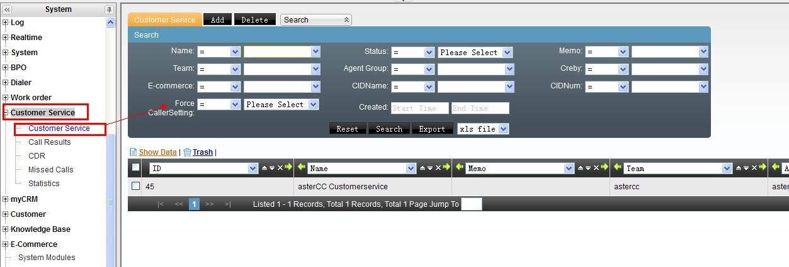
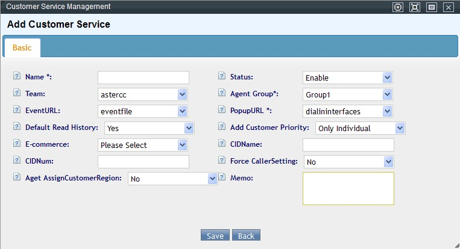
Un mismo servicio puede tener varios grupos de agentes, cada uno con su propia pantalla y su propio motivo de llamada por defecto — típico cuando un IVR deriva "consultas" a un grupo y "reclamos" a otro, dentro del mismo servicio de atención al cliente.
Los clientes de atención al cliente son los mismos que los de gestión de clientes (individual/institucional) — no hay una tabla de clientes separada por servicio.
Otros parámetros del servicio, a nivel de grupo de agentes: enlace por grupo (cada grupo de agentes puede tener su propia pantalla de trabajo dentro del mismo servicio — útil cuando un IVR deriva "1 = consultas" y "2 = reclamos" a grupos distintos) y motivo de llamada asociado al enlace de grupo (evita que el agente tenga que elegir el motivo manualmente si ya se sabe por qué tecla del IVR entró la llamada). También puede activarse división de clientes por región del agente (solo en sistemas con despliegue regional) para que el cliente quede asignado a la región donde fue atendido.
Motivos de llamada (naturaleza de la llamada)¶
En Atención al cliente → Motivos de llamada, se define el catálogo de motivos que el agente elige al finalizar cada llamada (ej. "consulta", "reclamo", "reparación"):
| Campo | Qué controla |
|---|---|
| Nombre del motivo | Palabra o frase breve que describe el propósito de la llamada o el resultado final |
| Estado | Respondida / no respondida — la pantalla de llamada muestra un listado de motivos distinto según si la llamada fue atendida o no |
| Equipo | A qué equipo aplica este motivo (por defecto, todos) |
| Work order asociado | Si el módulo de work orders está instalado, al elegir este motivo el agente puede crear automáticamente un work order de la plantilla vinculada (ej. motivo "reclamo" → work order de tipo reclamo) |
| Servicio de atención al cliente | Si se especifica, solo ese servicio puede usar este motivo |
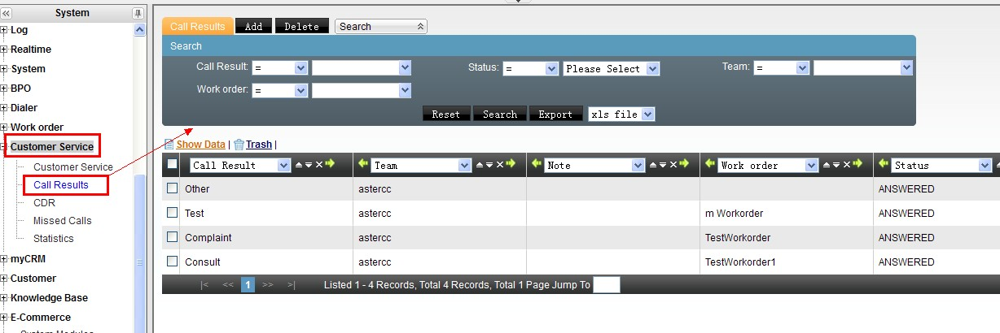
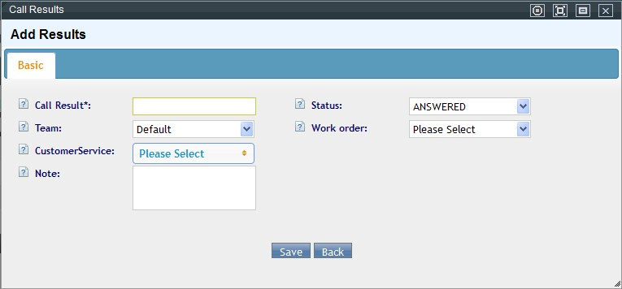
El mismo motivo se reutiliza en campañas salientes, donde se guarda como el "resultado de llamada" que elige el agente.
Registro de llamadas (CDR) del servicio¶
En Atención al cliente → Registro de llamadas, se listan las llamadas de todos los servicios de atención al cliente, con código de color: en rojo, llamadas entrantes que el agente no respondió; en verde, llamadas de retorno (callback) hechas por el agente que el cliente no respondió. Cada fila permite escuchar o descargar la grabación cuando existe.
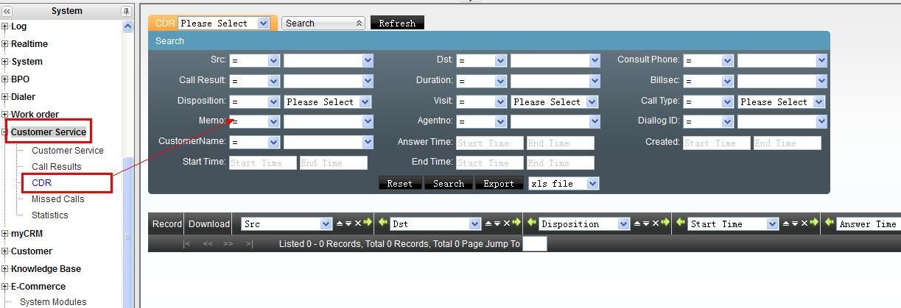
Búsqueda de clientes (pantalla del agente)¶
Búsqueda de clientes es una pantalla exclusiva de la plataforma del agente (habilitada por rol) para que el agente busque manualmente un cliente — por ejemplo, para completar un registro pendiente o hacer una llamada de seguimiento fuera del flujo normal de atención de una llamada entrante. Los campos de búsqueda disponibles dependen de la configuración de campos de búsqueda de cada servicio de atención al cliente, y se puede elegir buscar entre clientes individuales o institucionales.
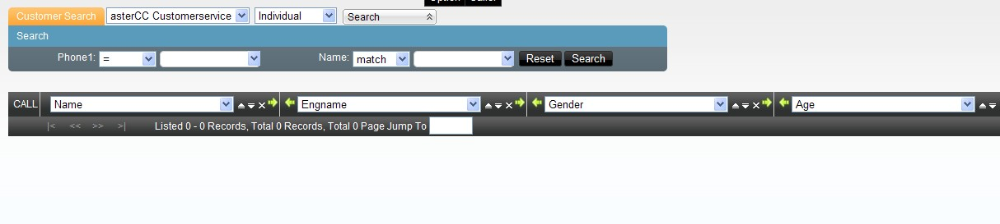
Llamadas perdidas (gestión de "漏单")¶
Atención al cliente → Llamadas perdidas lista las llamadas entrantes que colgaron antes de que un agente libre las atendiera. Las no devueltas aparecen en rojo (o se filtran por el campo "¿ya se devolvió?"). Desde esta pantalla el agente puede volver a llamar directamente (doble clic, o con el botón que antepone un 0 si el número requiere prefijo de larga distancia). La lista no se actualiza en tiempo real — dos agentes del mismo grupo pueden ver la misma llamada perdida; si uno ya la devolvió, el otro recibe un aviso al intentar marcar. Un supervisor de grupo con una plantilla de work order de "llamada perdida" puede seleccionar varias filas y generar un work order en lote para cada una; al crear el work order, la llamada perdida se marca automáticamente como devuelta.
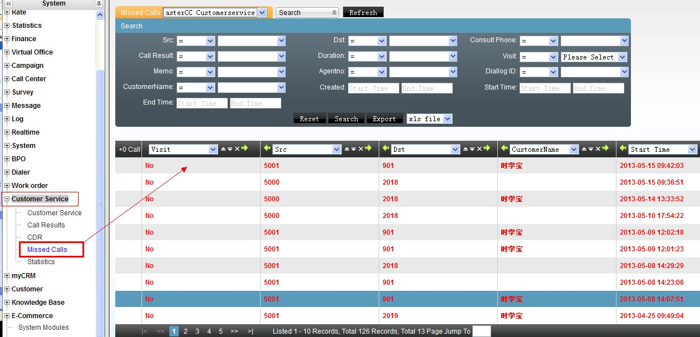
Reportes y estadísticas de atención al cliente¶
Atención al cliente → Estadísticas genera reportes agrupados por servicio o por agente (con desglose adicional por grupo de agentes y agente individual). Cada consulta se procesa como una tarea de fondo — no es un reporte instantáneo — y queda en una lista de tareas de estadísticas que se puede refrescar hasta que termine de procesarse; el resultado se puede ver en pantalla o exportar a archivo.
Gestión de clientes¶
- Cliente individual / institucional: dos tipos de ficha de cliente en el sistema, cada una con sus propios campos personalizados y etiquetas. Comparten el mismo origen de datos que usan atención al cliente y campañas salientes — importación masiva, alta manual desde la pantalla de gestión de clientes, o alta desde la pantalla emergente de atención al cliente/campaña.
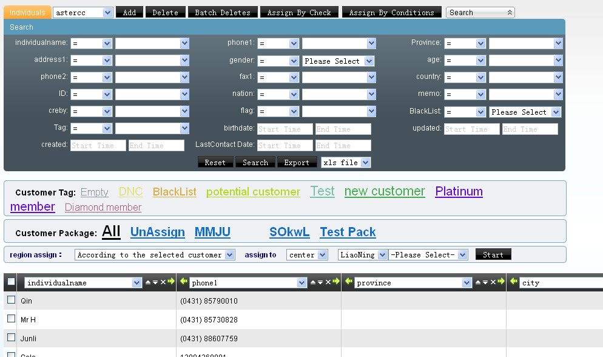
- Etiquetas de cliente: clasificación libre para segmentar o filtrar clientes (ver más abajo).
- Registro de contacto: historial de todas las interacciones con un cliente, sin importar si vinieron de atención al cliente o de una campaña.
- Campos personalizados y configuración de la tabla general: permiten adaptar qué información se captura por cliente según el negocio (ver más abajo).
Registro de contacto¶
El registro de contacto (Gestión de clientes → Registro de contacto) es la bitácora unificada de cada interacción — no importa si el cliente vino de atención al cliente o de una campaña saliente. Igual que otras tablas de alto volumen, se divide en recientes e históricos según el tiempo configurado en Sistema → Configuración → Procesamiento de grandes datos → Retención de registro de contacto del equipo. Cada fila registra:
| Campo | Qué guarda |
|---|---|
| Módulo | En qué módulo ocurrió el contacto |
| Nombre del cliente | Nombre usado al momento de guardar el contacto |
| Medio de contacto | phone, sms, email o fax |
| Destino | El número, correo o fax correspondiente al medio usado |
| Resultado de llamada | En atención al cliente, el motivo de llamada elegido; en campañas salientes, el resultado de la llamada |
| Agente | Quién atendió el contacto |
| Estado del cliente | Solo aplica a campañas salientes — el estado de seguimiento que el agente eligió |
| Notas | Lo que el agente escribió en el cuadro de notas de este contacto |
| Creador / fecha de creación | Agente y momento del contacto |
| Región de creación / origen | Solo en sistemas con despliegue regional |
Campos personalizados¶
Además de dar de alta campos en la ficha de cliente (Gestión de clientes → Campos personalizados), cada campo tiene un tipo que determina cómo se captura el dato:
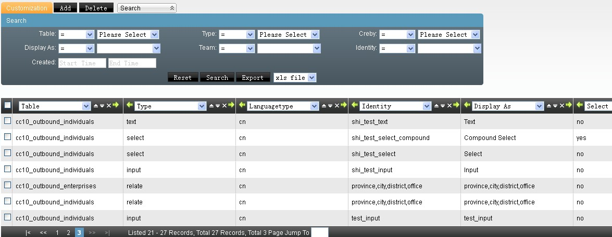
| Tipo | Comportamiento |
|---|---|
input |
Texto corto de una línea |
select |
Lista desplegable con opciones separadas por coma; con "select editable" activado, además admite texto libre |
integer |
Número entero |
text |
Texto largo (notas, detalle de trabajo) |
upload |
Subida de archivo o imagen |
date / datetime |
Selector de fecha, con o sin hora |
relate |
Campos relacionados en cascada (ej. país → provincia → ciudad) — se cargan por textarea (para volumen bajo) o subiendo un archivo .txt (para volumen alto) |
link |
Enlace de pantalla emergente (screen-pop) hacia una URL externa que recibe parámetros del sistema (ej. tipo de llamada, teléfono, nombre del cliente) — se abre en la pestaña de trabajo del agente o en una ventana de navegador aparte, según se configure; disponible al recibir una llamada, al conectarse, o solo cuando el agente lo abre manualmente |
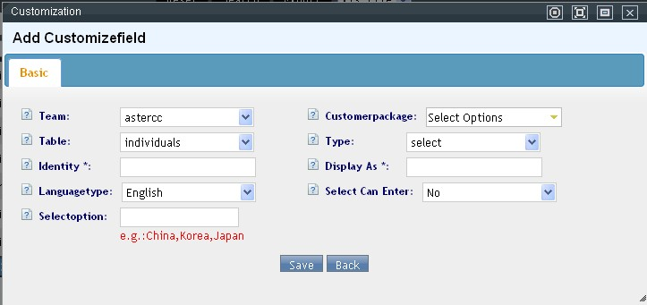
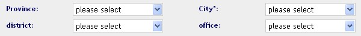
El campo puede limitarse a un paquete de clientes específico (si no se elige ninguno, se agrega automáticamente a todos los paquetes nuevos que se creen después). Al editar un campo ya creado, si originalmente no tenía paquete asignado no se le puede asignar uno después; si ya tenía paquetes, solo se pueden agregar más, nunca quitar los existentes (para no perder datos ya capturados). Los campos de tipo input/select pueden cambiarse entre sí; el resto de tipos no es intercambiable una vez creado.
La visibilidad y el orden de estos campos en la pantalla de atención al cliente se controla desde Atención al cliente → Campos personalizados; en campañas, desde Campaña → Campaña → campos de fondo y campos de agente.
Etiquetas de cliente¶
Cada equipo tiene su propio catálogo de etiquetas, uno para clientes individuales y otro para institucionales (Gestión de clientes → Etiquetas de cliente individual/institucional). Dos reglas configurables por equipo:
- Permitir que el agente agregue etiquetas: si el agente encuentra una característica del cliente que no tiene etiqueta todavía, puede crear una nueva sobre la marcha — queda disponible para todo el equipo de inmediato.
- Permitir selección múltiple: si el campo describe un estado de proceso (mutuamente excluyente), se desactiva; si describe características del cliente (pueden combinarse), se activa.
Cada etiqueta puede marcarse como predeterminada (se aplica automáticamente al importar clientes o al dar de alta uno nuevo desde la pantalla, aunque el agente puede desmarcarla) y tiene un orden de aparición. Dos etiquetas de sistema no se pueden borrar ni editar (solo reordenar): Empty (marcador para buscar clientes sin ninguna etiqueta) y DNC ("Do Not Call" / no volver a llamar — se usa cuando el cliente pide no ser contactado). Borrar una etiqueta no borra la referencia que ya tienen los clientes que la llevaban puesta.
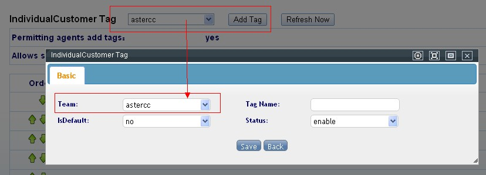
Fichas individuales e institucionales — comportamiento común¶
Ambas tablas maestras (individual e institucional) comparten el mismo comportamiento operativo:
- Origen de datos: importación masiva (Administración avanzada del call center → Importación, hacia la tabla maestra o hacia un paquete de clientes que use la tabla maestra), alta manual desde la pantalla de gestión de clientes, alta desde la pantalla emergente de atención al cliente, o alta desde campañas salientes (pantalla de gestión de clientes de campaña o pantalla emergente del agente).
- Campos especiales — cliente individual: edad/fecha de nacimiento se calculan automáticamente uno a partir del otro; lista negra = "sí" agrega automáticamente todos los teléfonos del cliente al listado de números bloqueados de PBX avanzado → lista negra de entrantes (se recomienda documentar el motivo en un campo personalizado dedicado); institución asociada vincula el cliente individual a una institución del mismo equipo.
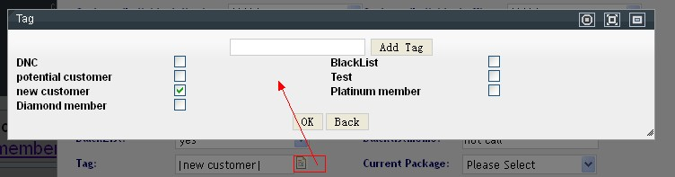
- Paquete de clientes actual: asigna el cliente a un paquete de campaña saliente que use la tabla maestra — un cliente de la tabla maestra solo puede pertenecer a un paquete a la vez.
- Asignación de clientes (a un paquete): por selección manual, por lote según los filtros de búsqueda actuales (se recomienda no superar ~3000 registros por lote para evitar timeouts), o al momento del alta eligiendo directamente el paquete. Al asignar, puede optarse por conservar el agente asignado (si el paquete destino tiene al mismo agente que ya atendía al cliente) y conservar el estado de seguimiento.
- Eliminación masiva: por lote según los filtros de búsqueda actuales — si no se aplica ningún filtro, se borra toda la tabla; se recomienda acotar por fecha de creación o lote de importación y proceder en tandas de no más de ~3000 registros.
- División regional: solo visible en sistemas con despliegue regional — copia clientes seleccionados (o filtrados) hacia la base de datos de un nodo hijo.
E-commerce¶
En E-commerce → E-commerce → Agregar se crea un "catálogo" de venta:
| Campo | Qué controla |
|---|---|
| Nombre del catálogo | Ej. "Suplementos", "Electrónica" — se pueden tener varios catálogos independientes |
| Equipo | A qué equipo pertenece |
| Origen | Canal de la venta (saliente, entrante, revista, internet, etc.) |
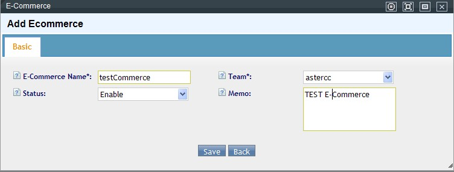
Productos¶
En E-commerce → Gestión de productos, cada producto define:
| Campo | Qué controla |
|---|---|
| Nombre del producto | Se recomienda que distinga variantes de venta del mismo ítem (ej. "leche 1 bolsa" vs. "leche 1 caja") |
| Publicado | Solo los productos publicados son visibles/vendibles por el agente |
| Tipo de producto | Físico, virtual, o servicio |
| Categoría | Clasificación libre del catálogo |
| Código de barras / especificación / unidad | Datos de referencia del producto |
| Cantidad | Cuántas unidades de la unidad base representa una venta — el sistema no calcula el despacho, solo registra cuántas veces se vendió el producto; la conversión a unidades de despacho es responsabilidad del negocio |
| Precio / precio de socio | Dos tarifas posibles por venta — el agente elige cuál aplica según indique el negocio |
| Vigencia (inicio/fin) | Solo informativa, para productos con periodo de validez (ej. garantías) |
| Prioridad | Los productos con mayor prioridad aparecen primero en la lista del agente — útil para poner los más vendidos en la primera página y reducir tiempo de búsqueda |
| Producto relacionado | Vincula a otro producto del mismo catálogo |
| Descripción funcional | Para que el agente pueda responder preguntas del cliente sobre el producto |
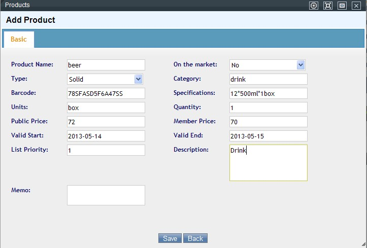
Pedidos (recientes e históricos)¶
Los pedidos se dividen en dos tablas — recientes e históricos — según el tiempo de retención configurado en Sistema → Configuración → Procesamiento de grandes datos → Retención de datos de e-commerce. Ambas comparten la misma estructura, con cuatro pestañas al editar un pedido:
| Pestaña | Contenido |
|---|---|
| Información básica | Número de pedido, módulo/negocio de origen, cliente, estado, precio original, descuento, monto a cobrar, si requiere factura, fechas de envío/entrega, agente y equipo que lo creó |
| Datos del destinatario | A quién y dónde se envía |
| Datos de envío | Transportista, guía, estado del envío |
| Productos comprados | Detalle de líneas del pedido |
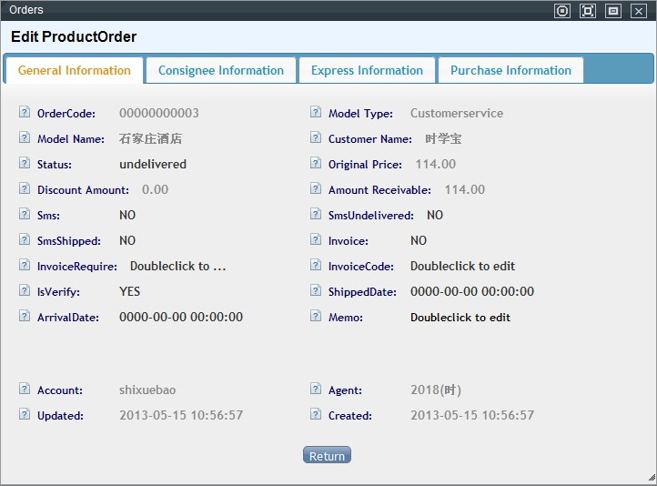
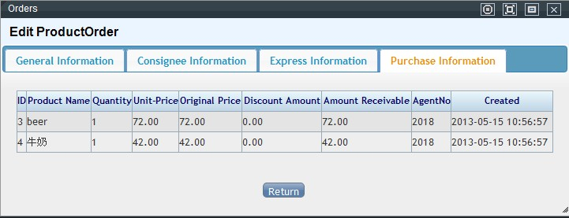
No se pueden crear pedidos manualmente desde esta pantalla — solo se editan, exportan o eliminan; los pedidos nuevos se generan desde la pantalla emergente del agente durante una llamada.
Dentro de "Información básica" hay además un grupo de campos opcionales relacionados con SMS y facturación, útiles para procesos de seguimiento post-venta:
| Campo | Qué controla |
|---|---|
| Seguimiento por SMS | Si el pedido usa confirmación por SMS al cliente — requiere un desarrollo a medida solicitado a AsterCC, no viene activo por defecto |
| SMS de pedido enviado / SMS de envío enviado | Indican si ya se envió al cliente el SMS de confirmación del pedido y el de despacho, respectivamente |
| Participa en el cálculo (verificado) | Si el pedido debe contarse en los reportes de e-commerce — permite excluir pedidos de prueba o anulados sin borrarlos |
| Requiere factura / detalle de factura / número de factura | Datos de facturación cuando el cliente la solicita |
El número de pedido se genera automáticamente a partir del ID de la tabla (11 dígitos, rellenado con ceros a la izquierda) — no es editable.
Registro de ventas (recientes e históricos)¶
Complementario a los pedidos: mientras un pedido agrupa la operación completa, el registro de ventas detalla cada línea de producto vendida (producto, cantidad, precio, descuento, monto, agente, fechas) — útil para reportes por producto en vez de por pedido.
Logística¶
En E-commerce → Logística, se asignan zonas de despacho a un almacén:
| Campo | Qué define |
|---|---|
| Nombre de la zona | Identificación libre |
| Almacén | A qué almacén pertenece esta zona |
| Grupo logístico | Qué grupo de agentes gestiona esta zona |
| Equipo | A qué equipo pertenece |
| Agente responsable | Quién(es) del grupo gestiona(n) específicamente esta zona |
| Provincia / ciudad | Cobertura geográfica de la zona |
Warning
Si una zona no define provincia/ciudad, cubre todo el país — en ese caso no puede existir una segunda zona sin provincia/ciudad para el mismo almacén, porque el sistema no podría decidir a cuál asignar un pedido nuevo. Para logística multi-almacén por región, se recomienda crear campos personalizados de tipo "relación" en el pedido (provincia/ciudad/distrito del destinatario) en vez de depender solo de esta pantalla.
Una vez creado, se vincula el catálogo a una tarea de campaña o a un servicio de atención al cliente para que el agente genere pedidos directamente desde la ficha del cliente durante la llamada.
Referencia rápida¶
| Tarea | Dónde |
|---|---|
| Crear servicio de atención al cliente | Atención al cliente → Atención al cliente |
| Configurar motivos de llamada | Atención al cliente → Motivos de llamada |
| Ver registro de llamadas / llamadas perdidas | Atención al cliente → Registro de llamadas / Llamadas perdidas |
| Generar reportes de atención al cliente | Atención al cliente → Estadísticas |
| Gestionar clientes individuales/institucionales | Gestión de clientes |
| Crear campos personalizados de cliente | Gestión de clientes → Campos personalizados |
| Gestionar etiquetas de cliente | Gestión de clientes → Etiquetas de cliente individual/institucional |
| Crear catálogo de e-commerce | E-commerce → E-commerce |
| Gestionar productos | E-commerce → Gestión de productos |
| Ver pedidos | E-commerce → Pedidos recientes / históricos |
| Configurar zonas de despacho | E-commerce → Logística |
| WeChat, Fax, envío masivo | Ver Mensajería — WeChat, Fax y envío masivo |
Fuentes¶
raw/zh/呼入客服.txtraw/zh/模块使用说明/呼入客服/呼入客服.txtraw/zh/模块使用说明/呼入客服/来电性质.txtraw/zh/模块使用说明/呼入客服/呼叫记录.txtraw/zh/模块使用说明/呼入客服/客户搜索.txtraw/zh/模块使用说明/呼入客服/漏单管理.txtraw/zh/模块使用说明/呼入客服/统计报表.txtraw/zh/模块使用说明/客户管理.txtraw/zh/模块使用说明/客户管理/联络记录.txtraw/zh/模块使用说明/客户管理/总表字段设置.txtraw/zh/模块使用说明/客户管理/自定义字段.txtraw/zh/模块使用说明/客户管理/个人客户标签管理.txtraw/zh/模块使用说明/客户管理/机构客户标签管理.txtraw/zh/模块使用说明/客户管理/个人客户管理.txtraw/zh/模块使用说明/客户管理/机构客户管理.txtraw/zh/模块使用说明/电子商务/电子商务.txtraw/zh/模块使用说明/电子商务/产品管理.txtraw/zh/模块使用说明/电子商务/近期订单.txtraw/zh/模块使用说明/电子商务/历史订单.txtraw/zh/模块使用说明/电子商务/近期售卖记录.txtraw/zh/模块使用说明/电子商务/历史售卖记录.txtraw/zh/模块使用说明/电子商务/物流管理.txtraw/en/module_manual/customer/contact_log.txtraw/en/module_manual/customer/customer_field.txtraw/en/module_manual/customer/customization.txtraw/en/module_manual/customer/individualcustomer_tag.txtraw/en/module_manual/customer/individuals.txtraw/en/module_manual/customer/organization.txtraw/en/module_manual/customer/organization_customer_tag.txtraw/en/module_manual/customerservice/call_result.txtraw/en/module_manual/customerservice/cdr.txtraw/en/module_manual/customerservice/customer_search.txtraw/en/module_manual/customerservice/customer_service.txtraw/en/module_manual/customerservice/missed_call.txtraw/en/module_manual/customerservice/statistics.txtraw/en/module_manual/e_commerce/e_commerce.txtraw/en/module_manual/e_commerce/history_order_details.txtraw/en/module_manual/e_commerce/history_orders.txtraw/en/module_manual/e_commerce/order_details.txtraw/en/module_manual/e_commerce/orders.txtraw/en/module_manual/e_commerce/product.txt